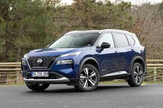

The Nissan X-Trail, also known as the Nissan Rogue in certain markets, is a compact SUV that combines practicality with a modern design. It is a family-friendly vehicle, offering a spacious interior, comfortable seating, and flexible cargo space, which make it ideal for both everyday commutes and weekend getaways. Equipped with advanced safety features such as Nissan’s ProPILOT Assist, the X-Trail provides semi-autonomous driving capabilities, which help with steering, braking, and maintaining a safe distance from other vehicles. This SUV also includes driver-assistance technologies like blind-spot monitoring, lane departure warning, and rear cross-traffic alert, enhancing safety for both the driver and passengers.
In terms of performance, the Nissan X-Trail offers a choice of fuel-efficient engines and, in some models, an optional hybrid powertrain. The vehicle handles well on various terrains, making it versatile enough for light off-road use and road trips. Its all-wheel-drive options and selectable drive modes allow drivers to adapt to different weather conditions and driving scenarios, further enhancing its practicality. Inside, the X-Trail features a modern infotainment system with smartphone connectivity, a large touchscreen, and optional extras such as a panoramic sunroof and premium sound system. This blend of functionality, comfort, and technology makes the X-Trail a competitive option in the compact SUV market, appealing to families and outdoor enthusiasts alike.
